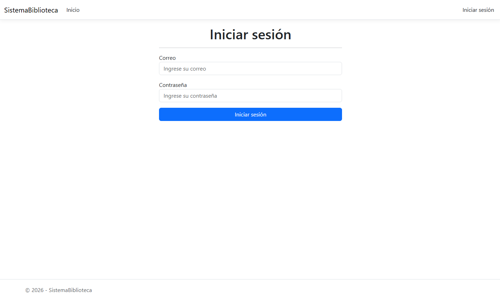
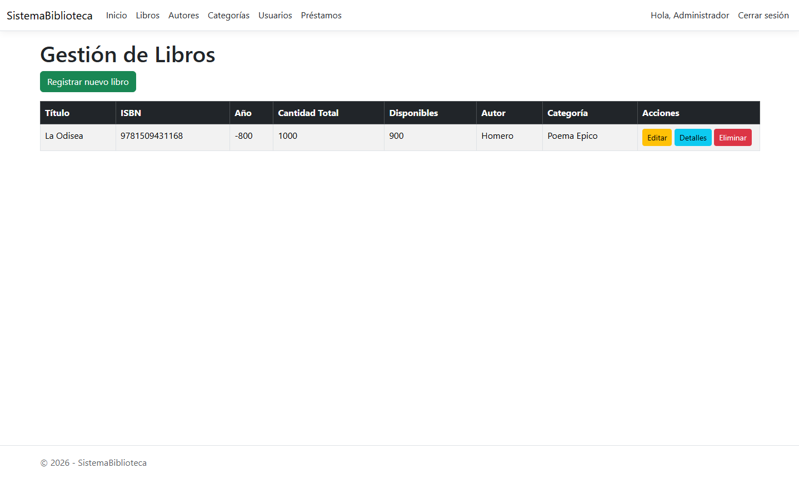

Sobre el proyecto
Sistema web desarrollado para la gestión de una biblioteca, permitiendo organizar la información relacionada con libros, autores, categorías, usuarios y préstamos.
Sistema web para la gestión de una biblioteca
Sistema web desarrollado para la gestión de una biblioteca, permitiendo organizar la información relacionada con libros, autores, categorías, usuarios y préstamos.
Desarrollar un sistema que permita administrar de manera organizada los diferentes elementos que forman parte de una biblioteca.


Definición de la idea y estructura del sistema.
Diseño de la estructura y organización de la aplicación.
Implementación del sistema utilizando C# y ASP.NET Core.
Integración y gestión de información mediante SQL Server.
Sistema de biblioteca funcional presentado en el portafolio.